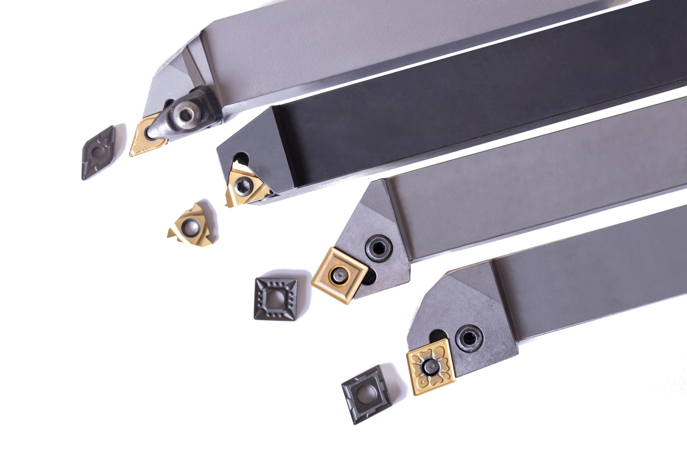
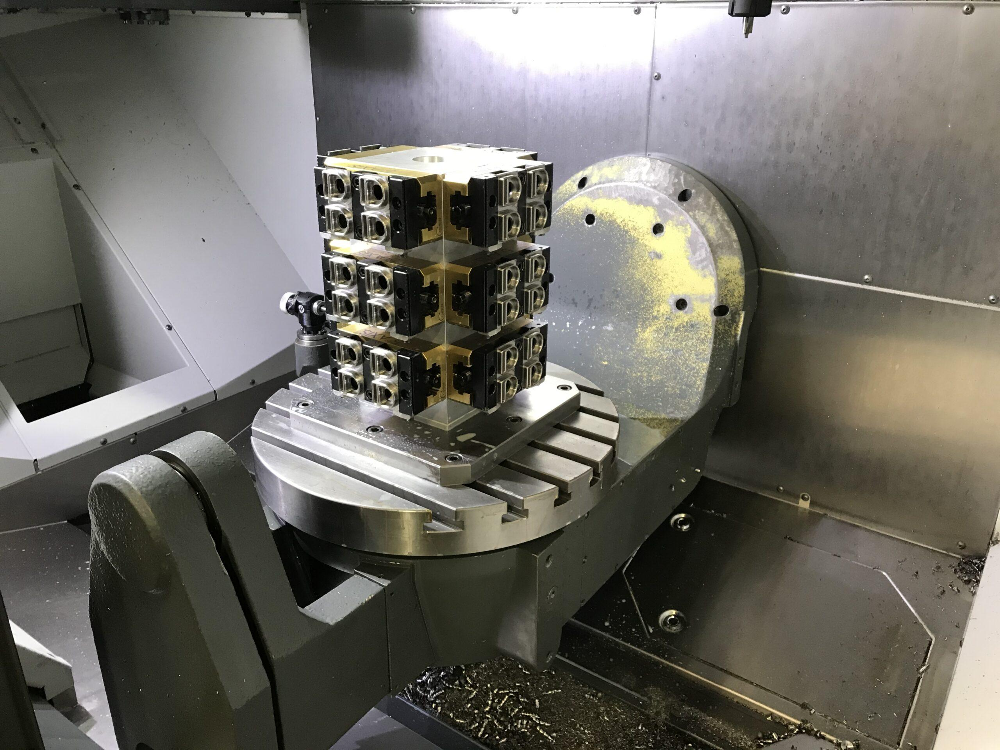
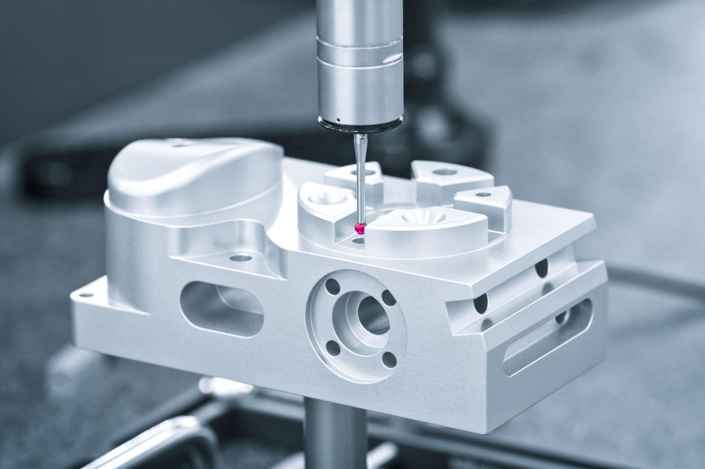
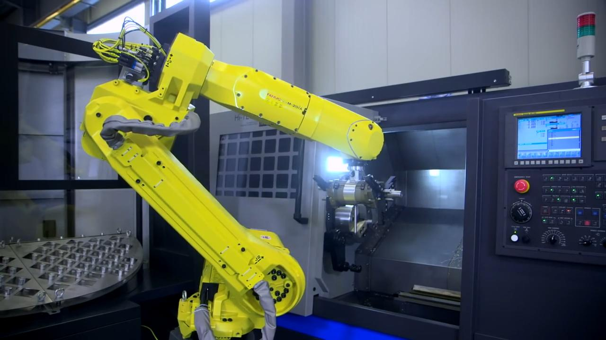
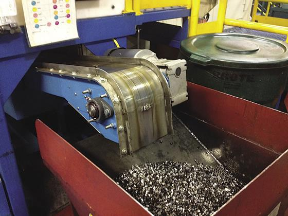
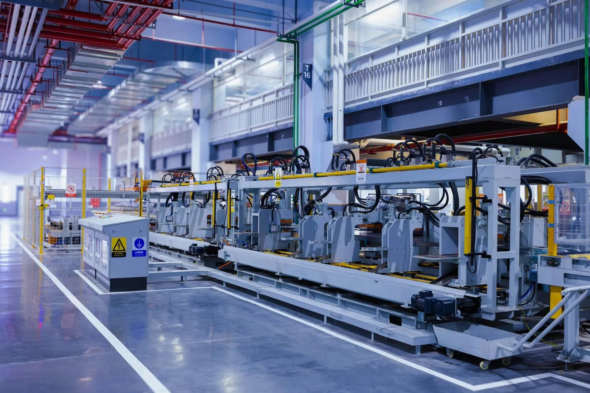

Инженерные решения для оснащения производства
Режущий инструмент, оснастка, измерение, автоматизация, СОЖ и комплексное оснащение участков — всё, что нужно вокруг станка для стабильного технологического процесса.

01Режущий инструмент
Пластины, фрезы, свёрла и специнструмент под материал, станок и технологию обработки.
Смотреть каталог →
02Оснастка
Зажим детали, оправки инструмента и специальные приспособления под установ.
Смотреть каталог →
03Измерение
Ручной инструмент, КИМ, 3D-сканирование и контроль качества в цикле обработки.
Смотреть каталог →
04Автоматизация
Роботизированная загрузка, паллетные системы и решения для непрерывной работы участка.
Смотреть каталог →
05СОЖ и стружка
Подача и фильтрация СОЖ, конвейеры и переработка стружки для чистого процесса.
Смотреть каталог →
06Комплексное оснащение
Готовый участок: станок, инструмент, оснастка, измерение и автоматизация одним решением.
Смотреть каталог →Частые вопросы
Да, каждое направление — инструмент, оснастка, измерение, автоматизация, СОЖ — доступно отдельно, без привязки к покупке станка.
После чертежа детали и требований к обработке технолог формирует состав инструмента, оснастки и сопутствующего оборудования под задачу.
Да, раздел «Комплексное оснащение» — станок, инструмент, оснастка, измерение и автоматизация одним проектом, с пусконаладкой и обучением персонала.
Да, поставка сопровождается пусконаладкой, обучением операторов и последующей технической поддержкой.
Актуальный перечень брендов и номенклатуры представлен в каждом разделе — инструмент, оснастка и измерение.
Нужно собрать оснащение под производство?
Передайте деталь, материал, партию и требования к точности — соберём связку: инструмент, оснастка, измерение, автоматизация и сервис.